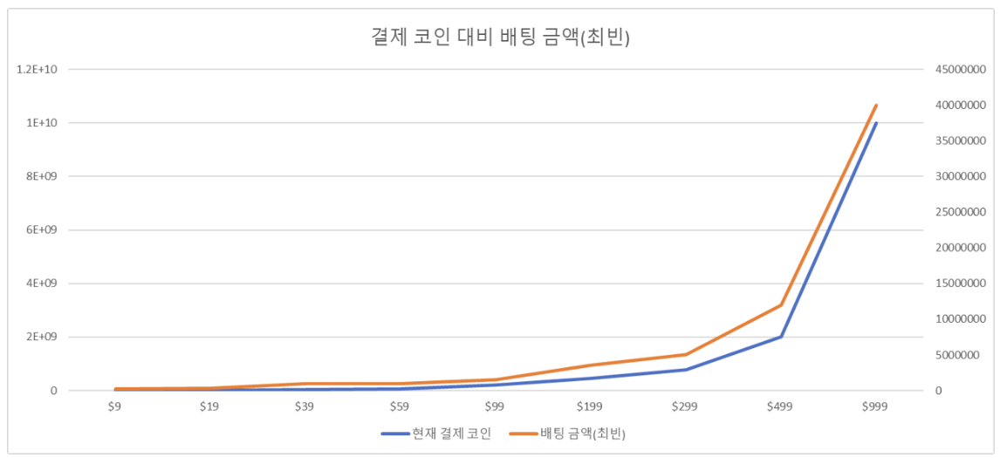
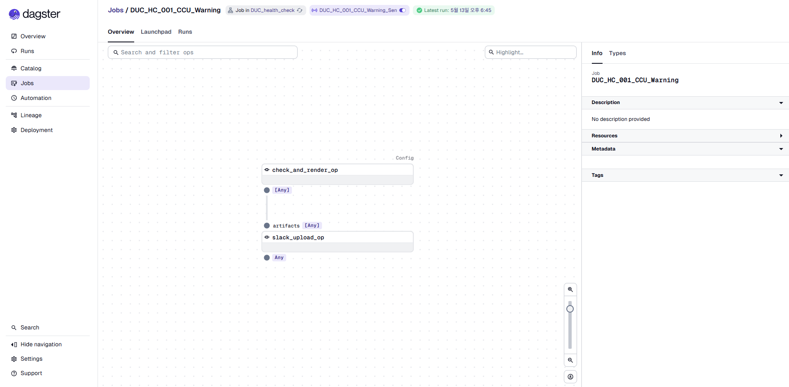
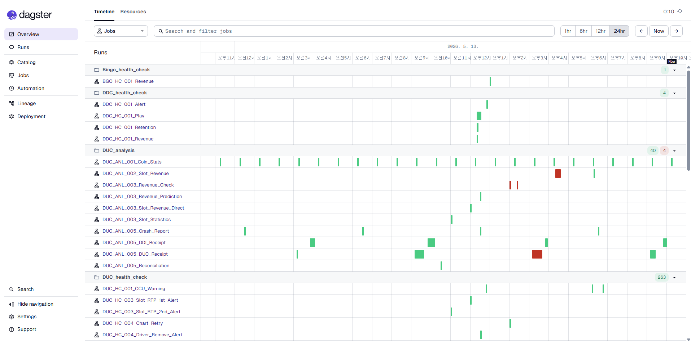
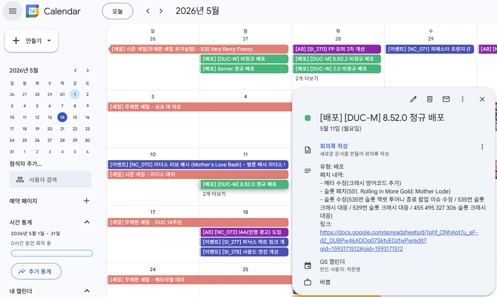
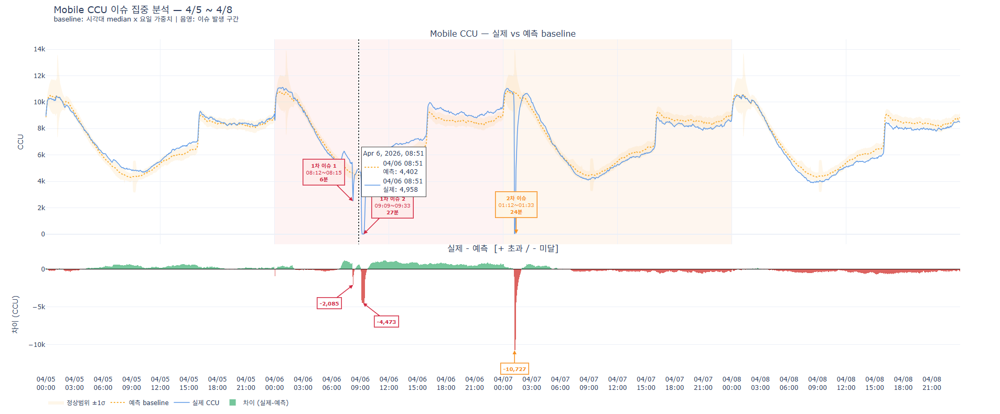

CASE B
Facebook 팬페이지 정지 대응
KPI 보고에서 AU 하락 감지 → Facebook 팬페이지 정지 식별 → 대체 페이지 PUSH 안내 → 유저 복귀.
지표 · 파이프라인 · BI를 직접 만들고 운영합니다.
AI 에이전트를 일상 도구로 씁니다.
주단위 매출 예측 → 주간 KPI 정의 → 4주 변화율 스코어링 자동화 → 이상치 발견 시 알럿 → 의사결정까지 이어진 파이프라인.
문제 정의
배포·이벤트 영향도를 정량 평가할 기준이 없었음.
접근
주단위 매출 예측을 KPI 임계선으로, 4주 평균 대비 변화율을 스코어화.
액션 트리거
변화율 ±N% 이상 또는 KPI 임계선 이탈 시 알럿 + 원인 후보 제언.

KPI 보고에서 AU 하락 감지 → Facebook 팬페이지 정지 식별 → 대체 페이지 PUSH 안내 → 유저 복귀.
핵심 지표를 24시간 모니터링하는 Dagster 파이프라인을 직접 구축. 크론탭 + 주피터 임시 운영을 Dagster + Bitbucket(CI/CD) 기반 표준 인프라로 전환.
기존 운영의 한계
현재 운영 인프라


실험 채택과 신규 슬롯 평가를 위한 두 가지 운영 대시보드를 직접 설계·구축.
AB Test 운영 대시보드
진행 중인 AB Test의 핵심 KPI(누적매출 · AU · 전환율 · ARPU)를 한 화면에서 확인하고 채택 여부를 판단.
신규 슬롯 평가 대시보드
새로 오픈한 슬롯의 매출 비중과 리텐션을 최근 8주 슬롯과 비교해 출시 여부를 결정.
카드 클릭 → 새 탭에서 풀스크린.
스케일 · 안정성 · 도구 결합 · 학습.
opus-4-7) + Codex (gpt-5.x) 의도적 병용AGENTS.md에 모델 난이도별 분업 정책auto_report/issue_timeline_extractoraiops_dev ↔ aiops_gsdetection Bitbucket 동시 관리CLAUDE.md · AGENTS.md · CODEX_*.mdsuperpowers — brainstorming · writing-plans · TDD · systematic-debugging · verification · parallel-agents · git-worktreesgoal (외부) — 세션 목표 고정 + Stop hook으로 이탈 방지creator_team (커스텀 6 페이즈) — Brainstorm → Plan → TDD → 3.5 Dagster UI 검증 → Simplify → Review → FinishGS_projection_renew_slot · 매출 예측v0_A ~ v5 단계적 실험v4_AB_blended — RMSE · CI · Direction 셋 다 strict 개선Auto_calender · 자동 일정 캘린더Manual hold, rollback-run 안전장치
redshift_agent · DUC 분석 에이전트analyses/YYYY-MM-DD-<slug>/ + knowledge/ + shared/Ciphertext2026-04-06-mobile-ccu-anomaly — 4/6~4/7 CCU 이상치 + 플랫폼/버전 축 분석